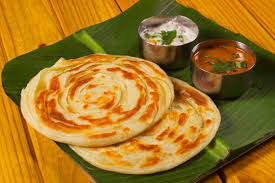

Home
Parota

Description
Parota, also known as paratha in many parts of India, is a popular South Asian flatbread made from wheat flour, commonly enjoyed in India, Sri Lanka, and Bangladesh.
In South India, especially Tamil Nadu and Kerala, it is famously known as "Parotta" and made using maida (refined flour).
Ingredients
- Maida (refined wheat flour) – 2 cups
- Water – as needed (approximately ¾ cup)
- Salt – ½ tsp
- Sugar – ½ tsp (optional, for softness)
- Oil – 2 to 3 tbsp (for kneading and layering)
- Ghee or butter – for cooking (optional, for extra flavor)
Steps
- Prepare the Dough: In a large mixing bowl, combine 2 cups of maida (refined flour) with ½ teaspoon of salt and ½ teaspoon of sugar. Gradually add water while kneading to form a soft and smooth dough. Once the dough comes together, add about 1 tablespoon of oil and knead it further for 5 to 10 minutes until it becomes elastic and pliable. Cover the dough with a damp cloth and let it rest for at least 1 hour to help it soften and develop gluten.
- Divide and Rest: After the dough has rested, divide it into equal-sized balls based on the number of parotas you want to make. Lightly coat each ball with oil to prevent drying and sticking. Let these dough balls rest again for another 10 to 15 minutes to allow easier rolling and stretching later on.
- Roll and Layer: Take one dough ball and roll it out on a greased surface as thin as possible, almost to a transparent sheet. Spread some oil or ghee evenly over the surface. Start folding it like a paper fan or pleating it to create layers, then roll it into a spiral or coil shape, similar to a cinnamon roll. Flatten this coiled dough gently with a rolling pin into a thick disc, being careful not to press too hard and lose the layers.
- Cook the Parota: Heat a tawa or flat griddle over medium flame. Place the rolled parota onto the hot surface and drizzle a little oil or ghee around it. Cook the parota until it turns golden brown on one side, then flip and cook the other side the same way. Make sure both sides are well-cooked with light crispy spots forming on the surface.
- Fluff the Parota (Optional): Once cooked, remove the parota from the tawa and gently press or clap it between your hands while it's still hot. This step helps separate the layers and gives the parota its signature flaky texture. Serve it immediately with kurma, salna, or your favorite curry.
Eat it warm, eat it happy, and don’t forget to lick your fingers!